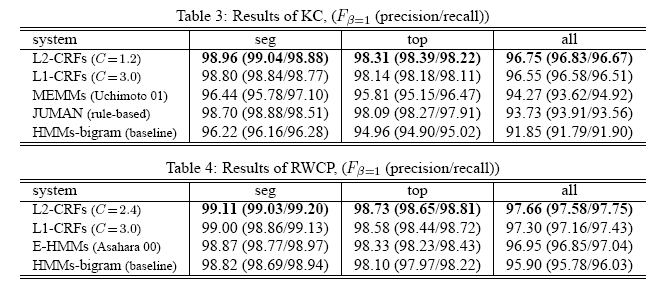

オープンな形態素解析器として Juman, ChaSen が存在する. それぞれの 基本的な開発理念は以下である
Juman 以前の商用的に配布されていた形態素解析器は, 辞書や品詞体系 連接規則はほぼ固定されており, ユーザ自身自由に定義できなかった. Juman は これらの定義すべて外部に出し自由な定義が可能になった.
辞書は比較的入手しやすいが, 連接コストや単語生起コストの定義は 人手によって行わざるをえなかった. 解析ミスを発見するたびに副作用が無い範 囲で連接コストを修正する必要があり, 開発コストが大きい.
また, Juman は日本語の形態素解析として開発されていたので, 未知語処理が日本語に特化されており, 未知語処理の定義を 自分で与えることはできない. また, 品詞は2階層までに固定されており, 品詞体系には一種の制限がある.
ChaSen の貢献の1つは, 統計処理 (HMM) によって連接コストや単語生起コストを 推定するようになった点にある. この処理のおかげで, 解析ミスを 蓄積するだけで自動的にコスト値を推定できるようになった. さらに, 品詞階層も無制限になり, 品詞体系を含めて(本当の意味で) 自由に定義できるようになった.
しかし, 複雑な品詞体系にすればするほど, データスパースネスの問題が 発生する. HMM を使う場合, HMM の内部状態(Hidden Class)を 1つに固定する 必要があるため, 各品詞から内部状態への「変換」が必要となる. 単純には 各品詞を1つの内部状態に割りあてればよいが, 活用まで含めて品詞を すべて展開すると, その数は 500 にも及び, 低頻度の品詞について 信頼度の高い推定量を得ることができない. 逆に, 頻度の高い「助詞」等の品詞は 語彙も含めて内部状態にしないと高い精度が得られない. 複雑な品詞体系にすればするほど, 内部状態の定義が困難になる. つまり, 現状の(複雑な)品詞体系を扱うには, HMM では力不足であり, それを補助するための人手コストが大きくなっている.
また, ChaSen にはコスト値推定モジュールが付与されていない. NAISTの内部では利用できるらしいが, 上記の理由から設定すべき パラメータが多く, 使いこなすのが困難である.
さらに, ChaSen も未知語処理もハードコーディングされており 自由に定義することはできない.
HMM は, 唯一の内部状態を定義する必要があった. 一方 CRF はオーバラッ プを含めた複数の内部状態を定義することが可能である. この機能により, 細い品詞階層と粗い品詞階層の確率値を混ぜるといった, 「スムージング」が自然にかつ自動的に実現できる. これは, 複雑な品詞体系を扱う上で便利な機能であり, 人手処理を大幅に簡略化することができる.
CRF の採用により, 品詞体系, 単語長, 辞書の変更に対し柔軟にかつ低コストで対応できるようになる. さらに, CRF は, HMM の 1/3 程度の学習コーパスで同程度の 性能が得られることが分かっている. つまり, 新しいドメインへの 適用といった事にも低コストで対処できるであろう.
また, CRF は, これまでの最小コスト法として定式化できるため, 解析速度の劣化はない.
MeCab 0.90 は, コスト推定プログラムも含め配布する. 最小限の設定でも高い精度が得られるようなユーザビリティーを 提供する.
解析結果: 上 Juman, 下 ChaSenとの比較.
seg:わかち書きの精度, top:品
詞まで含める, all:活用まですべて含める
E-HMMs が現状の MeCab/ChaSen

MeCab 0.90 では, ユーザが未知語処理の戦略を自由に定義可能となる. 基本的な戦略として字種に基づくわかち書きを行う. 字種そのものの定義(どの文字コードがどの字種に対応するか), 各字種に対するわかち書きの定義 (グループ化するか, N文字づつまとめる か), わかち書きされたものにどのような品詞を割りあてるか. といた事がユーザ自身で定義できる.
字種を表現するための内部コードに Unicode を用いており, 未知語処理の言語非依存性が(部分的に)実現できる.
また, 未知語処理のパラメータも CRF により推定される. ChaSen や Juman に比べれば, 未知語に対する 解析精度の向上が期待できる
解析例
MeCab 0.81 の解析結果
ホリエモン氏に会った。 ホ 名詞,一般,*,*,*,*,ホ,ホ,ホ リエ 名詞,固有名詞,人名,名,*,*,リエ,リエ,リエ モン 名詞,固有名詞,一般,*,*,*,モン,モン,モン 氏 名詞,接尾,人名,*,*,*,氏,シ,シ に 助詞,格助詞,一般,*,*,*,に,ニ,ニ 会っ 動詞,自立,*,*,五段・ワ行促音便,連用タ接続,会う,アッ,アッ た 助動詞,*,*,*,特殊・タ,基本形,た,タ,タ 。 記号,句点,*,*,*,*,。,。,。
MeCab 0.90 の解析結果 (周辺のコンテキストを考慮しながら「ホリエモン」を正しく解析できる)
ホリエモン氏に会った。 ホリエモン 名詞,固有名詞,人名,一般,*,*,* 0,10 氏 名詞,接尾,人名,*,*,*,氏,シ,シ 10,12 に 助詞,格助詞,一般,*,*,*,に,ニ,ニ 12,14 会っ 動詞,自立,*,*,五段・ワ行促音便,連用タ接続,会う,アッ,アッ 14,18 た 助動詞,*,*,*,特殊・タ,基本形,た,タ,タ 18,20 。 記号,句点,*,*,*,*,。,。,。 20,22
形態素解析器の仕事は, おおざっぱに言えば「入力文を形態素に区切る」こ とにある. しかし 「本部長」のように単独の解を得られない場合がある. (本/部長 or 本部/長). また長い複合語が定義されている時, その構成語が出力されないという問題もある.
MeCab 0.90 では, 「入力文を形態素に区切る」という機能とは別の 「入力文から形態素を抽出する」という機能を提供する. 「形態素を抽出する」機能を実現するには, 入力文のすべての部分文字列の「形態素らしさ」を 算出する必要がある. MeCab 0.90 では この「形態素らしさ」を「形態素周辺確率」 という形で算出する. 詳細は言語処理学会 2005 にて発表済み
以下が解析例である
本部長 本部 名詞,固有名詞,地域,一般,*,*,本部,モトブ,モトブ 0.026441 本部 名詞,一般,*,*,*,*,本部,ホンブ,ホンブ 0.619559 * 本 名詞,固有名詞,人名,姓,*,*,本,モト,モト 0.010897 本 名詞,一般,*,*,*,*,本,ホン,ホン 0.046961 本 接頭詞,名詞接続,*,*,*,*,本,ホン,ホン 0.292945 部長 名詞,一般,*,*,*,*,部長,ブチョウ,ブチョー 0.352623 長 名詞,一般,*,*,*,*,長,チョウ,チョー 0.013549 長 名詞,接尾,一般,*,*,*,長,チョウ,チョー 0.624362 *
* が付いたものが実際の解析結果. 「形態素らしさ(形態素周辺確率)」も同時に 出力される
「形態素らしら」は入力文によって変わることに注意されたい.
松本さんに会う。 松本 名詞,固有名詞,人名,姓,*,*,松本,マツモト,マツモト 0.989497 * さん 名詞,接尾,人名,*,*,*,さん,サン,サン 0.998228 * に 助詞,格助詞,一般,*,*,*,に,ニ,ニ 0.990367 * 会う 動詞,自立,*,*,五段・ワ行促音便,基本形,会う,アウ,アウ 0.999387 * 。 記号,句点,*,*,*,*,。,。,。 0.999999 * EOS 松本市に行く。 松本 名詞,固有名詞,地域,一般,*,*,松本,マツモト,マツモト 0.919221 * 松本 名詞,固有名詞,人名,姓,*,*,松本,マツモト,マツモト 0.073882 市 名詞,接尾,地域,*,*,*,市,シ,シ 0.886151 * 市 名詞,一般,*,*,*,*,市,シ,シ 0.110607 に 助詞,副詞化,*,*,*,*,に,ニ,ニ 0.013169 に 助詞,格助詞,一般,*,*,*,に,ニ,ニ 0.986618 * 行く 動詞,自立,*,*,五段・カ行促音便,基本形,行く,イク,イク 0.966972 * 行く 動詞,自立,*,*,五段・カ行促音便ユク,基本形,行く,ユク,ユク 0.030681 。 記号,句点,*,*,*,*,。,。,。 0.999997 * EOS
上記のように「松本」の形態素らしさは周辺のコンテキストで変化する
解析器とパラメータ(辞書, 連接コスト)が完全に独立に 設計されるので, 以下の辞書についてのパラメータを個別に配布する. ただし, ライセンスは個々の辞書に準ずる